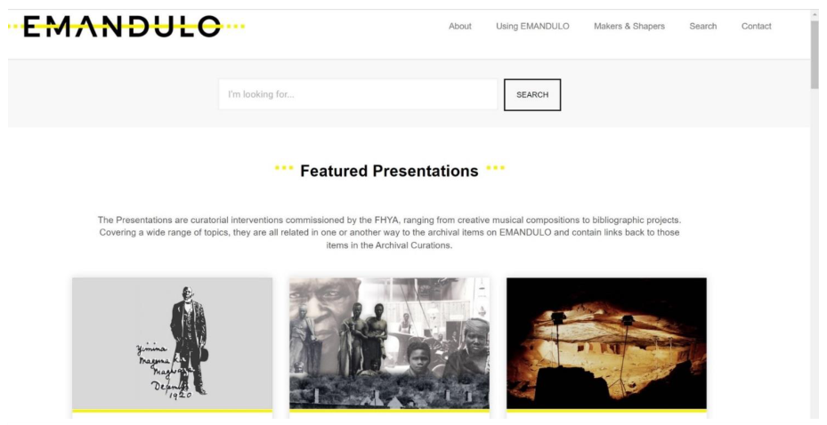
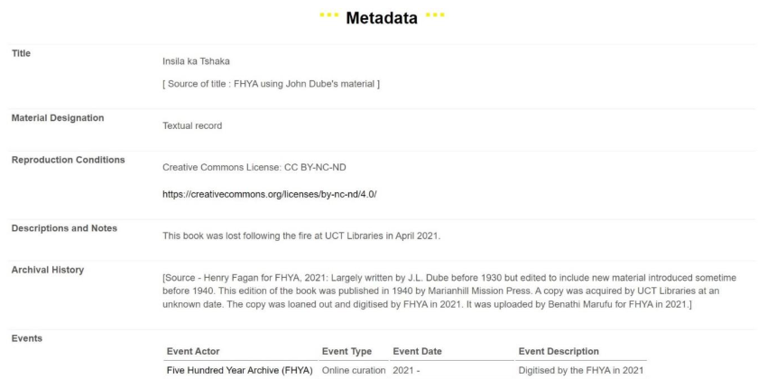

RAIL 2022Traduction automatique
Déballer les possibilités d'une archive de langue vernaculaire
Traduction automatique, non relue par un humain. L'article original est la version de référence ; les phrases soulignées sont celles dont les contrôles automatiques n'étaient pas sûrs.
Proceedings of the 3rd Workshop on Resources for African Indigenous Languages (RAIL 2022), Journal of the Digital Humanities Association of Southern Africa.
Traduction par Ernst van Gassen (Arktos AI Lab), sous licence CC BY-SA 4.0 comme l'original. Réutilisation permise avec attribution ; partage des adaptations dans les mêmes conditions. Les auteurs originaux n'ont pas relu ni approuvé cette traduction.
Texte brut réutilisable, avec sa licence : Français · LICENCE
Affiliations
Fagan, Henry
McNulty, Grant
Hamilton, Carolyn
Suleman, Hussein
Archive and Public Culture Research Initiative
Adresses e-mail retirées pour la protection de la vie privée. Elles figurent dans le PDF original.
Résumé
Le projet de recherche Five Hundred Year Archive est une initiative du Archive and Public Culture Research Initiative basé à l'Université de Cape Town. Dans le but de stimuler une plus grande implication avec le passé profond de l'Afrique australe, le projet a créé un corpus de ressources vernaculaires allant des plus anciennes disponibles jusqu'en 1910. Il comprend des productions par un éventail d'intellectuels africains dans une foule de langues africaines. Le corpus vernaculaire, avec ses riches métadonnées, constitue une archive linguistique et conceptuelle étendue. Il est utile pour les historiens, mais peut également offrir des possibilités de recherche dans d'autres domaines, en particulier s'il est utilisé en conjonction avec des méthodes computationnelles contemporaines.
Mots-clés
Intellectuels africains, Écriture vernaculaire, Orthographie, Métadonnées, Droit d'auteur
1. Introduction
Le projet Five Hundred Year Archive (FHYA) [1] fait partie de l'initiative Archive and Public Culture Research (APC) [2] de l'Université de Cape Town (UCT). Il cherche à stimuler l'engagement avec le passé profond - les époques négligées du passé de l'Afrique australe avant l'avènement du colonialisme européen. L'un des principaux défis de la recherche dans ce domaine est le grave manque de matériel, y compris de sources écrites. Les sources écrites qui existent ont des histoires complexes de production qui doivent être recherchées à part entière. Bien que les chercheurs puissent utiliser des documents non textuels comme des objets et des enregistrements sonores, une grande partie de ces documents est mal identifiée, non datée, perdue, désorganisée ou dispersée dans des institutions à travers le monde, ce qui rend les documents difficiles d'accès et d'utilisation. Travaillant à travers les médias et les disciplines, avec des institutions partenaires locales et internationales, nous, à la FHYA, avons créé une poignée de projets numériques qui répondent à ces défis.
2. Réunir une archive pour le passé profond
L’un de ces projets est la plateforme en ligne récemment lancée, EMANDULO [3], qui rassemble numériquement une collection croissante de documents historiques pertinents pour le passé profond de l’Afrique australe et les rend disponibles via une base de données unique et consultable. Le FHYA sélectionne des documents provenant de collections archivistiques ou muséales existantes et de galeries, ainsi que de collections personnelles. Les institutions partenaires incluent les Historical Papers de l’Université de Wits, la Galerie d’art de Johannesburg, le Musée du KwaZulu-Natal, l’agence provinciale de conservation du patrimoine Amafa/Heritage KwaZulu Natal, les Archives nationales du Swaziland, la Bibliothèque Killie Campbell Africana, le Musée d’archéologie et d’anthropologie de Cambridge, l’Académie autrichienne des sciences, l’Herbier Bews de l’Université du KwaZulu-Natal et la Bibliothèque de l’Université de Cambridge. Parfois, des particuliers ou des institutions offrent du matériel numérisé ou analogique à la FHYA. Les matériaux vont de centaines de textes publiés à des histoires orales enregistrées, des objets excavés, des rapports, des thèses, des cartes, des photographies, des images et des notes de chercheurs. La conservation de ces matériaux en ligne offre une occasion de réorganiser et de repositionner les matériaux de manière à remettre en question les façons dont ils ont été encadrés historiquement par les pratiques de connaissance coloniales.
Les fonds comprennent des productions anciennes du passé réalisées par des intellectuels africains qui transmettaient l'histoire des générations passées dans le nouveau monde colonial. Beaucoup sont des textes écrits en langues vernaculaires, que les érudits ont généralement ignorés comme sources historiques. Sur EMANDULO, ces documents sont soit présentés dans des thèmes spécifiques (voir par exemple la collection de documents d'EMANDULO liés à Magema Magwaza Fuze) [4] soit ajoutés au "Dépôt Général" (GR), qui inclut des documents ajoutés à la fois par l'équipe FHYA (Dépôt FHYA) [5] et par des contributeurs enregistrés (Dépôt Public) [6].

Figure 1 : Une capture d'écran de la page d'accueil d'EMANDULO.
Les éléments des sections GR et thématiques, comme les archives Fuze, ont des métadonnées étendues et consultables qui suivent, dans la mesure du possible, leurs historiques d'archives - la provenance et les historiques des collections - mettant au premier plan les changements auxquels ils ont été soumis au fil du temps. La provenance concerne le créateur ou l'origine des matériaux avant leur dépôt dans un cadre institutionnel, tandis que les histoires de collection font référence aux multiples mains qui les ont façonnés dans chaque contexte institutionnel.
Dans cet article, nous nous concentrons sur les textes vernaculaires sur EMANDULO à la fois dans les sections thématiques et dans le GR. Nous attirons l'attention sur les remarquables opportunités qu'ils ouvrent, non seulement pour les historiens et les linguistes historiques, mais aussi comme ressources vernaculaires pour les enseignants et les nombreuses façons encore inconnues dont elles pourraient être utilisées.
En effet, notre objectif en présentant un article lors de cet atelier est de l'utiliser comme un point de départ pour une discussion plus large avec un éventail d'experts sur d'autres domaines de développement et d'utilisation possibles.
3. Construire le corpus vernaculaire
3.1 Sélection des matériaux
Le FHYA sélectionne des matériaux pertinents pour la période de cinq cents ans précédant la colonisation européenne dans ce qui est aujourd'hui le Cap oriental, le KwaZulu-Natal, des parties du Highveld, l'eSwatini et le Lesotho, s'étendant délibérément au-delà des frontières modernes qui n'existaient pas aux époques précoloniales. Les textes vernaculaires, rendus dans une variété d'orthographes, apparaissent dans les premières versions de ce qui est devenu plus tard l'isiZulu, l'isiXhosa, le seSotho et le siSwati standardisés. Le corpus contient également des textes en dialectes tels que'siNguni' (Ndwandwe), sePhuthi et isiBhaca. Il comprend, entre autres, des œuvres d'auteurs bien connus comme John Dube, R.R.R. Dhlomo, Magema Fuze, S.E.K. Mqhayi, Henry Masila Ndawo et Thomas Mofolo, ainsi que de nombreux auteurs moins connus. Les textes abordent un large éventail de sujets allant de l'histoire, de l'écriture biographique et de la fiction historique, aux pièces de théâtre, aux commentaires sociaux et à la théologie. Il est important de noter que le corpus comprend les premiers dictionnaires.
Nous visons à inclure sur le site tous les textes vernaculaires que nous sommes en mesure de localiser depuis les temps les plus anciens jusqu'en 1910. Pour la période postérieure à 1910, nous incluons les textes que, pour diverses raisons, nous ou nos contributeurs enregistrés, considérons pertinents pour l'étude du passé lointain en Afrique australe.
3.2 Localisation des matériaux vernaculaires
Le FHYA recherche proactivement des textes en balayant les catalogues et les bases de données (comme UCT Libraries ou WorldCat) pour des mots-clés entre des dates particulières. Cela nous permet de localiser des documents appropriés, en particulier des livres publiés. Il parcourt également les dépôts en libre accès tels que Google Books ou Internet Archive pour les textes dont le droit d'auteur a expiré. Les trouvailles en ligne appropriées sont ensuite téléchargées et ajoutées à EMANDULO. Dans de nombreux cas, les textes sont fournis, ou signalés, par des chercheurs qui les trouvent au cours de leurs recherches. Avant l'incendie de l'UCT (Davids, 2021), nous avons pu accéder physiquement à des livres anciens dans la collection d'études africaines de l'UCT, que nous avons ensuite numérisés. Nous accédons parfois à des livres pertinents dans d'autres collections.
3.3 Numériser des matériaux
Le cas échéant, la FHYA numérise les documents qu’elle acquiert et crée des PDF. La plupart des numérisations sont réalisées à une qualité modérée et en noir et blanc pour s'assurer que la taille de leurs fichiers n'est pas excessivement grande lors de leur mise en ligne sur EMANDULO. Dans de rares cas, comme pour les livres qui mettent l’accent sur les visuels, les scans sont réalisés en couleur.
Le FHYA applique la reconnaissance optique de caractères (OCR) à tous les textes, les rendant lisibles par machine et donc consultables sur EMANDULO. Bien que le scanner de la FHYA soit capable de reconnaître des caractères dans plusieurs langues, les langues vernaculaires (à l'exception de l'isiXhosa) ne sont pas intrinsèquement reconnues par le logiciel. Il y a aussi certaines choses qui minent l'exactitude de l'OCR. Cela inclut les documents où le texte est estompé, ceux avec des polices anciennes rares et élaborées, ainsi qu'une orthographe désuète ou non standard. Les problèmes d'OCR se doublent de problèmes de recherche, car la fonction de recherche d'EMANDULO ne peut pas correctement indexer et rechercher le texte affecté. Pour les éléments dont le texte est difficile à discerner, le FHYA a commencé à introduire des transcriptions dactylographiées, où le texte intégral est rendu accessible en tant que document connexe. Dans certains cas, des textes manuscrits ont fait l'objet de résumés dactylographiés produits pour une raison ou une autre dans le passé. Parfois, des transcriptions ou des résumés sont fournis par des utilisateurs enregistrés. Par conséquent, les éléments d'origine sont indirectement recherchables.
Certains articles sont anciens et fragiles, ce qui rend leur numérisation difficile. Cela peut nécessiter une numérisation imprécise (comme des pages légèrement de travers) réalisée spécifiquement pour éviter de fatiguer les pages ou les cadres des livres délicats. De nombreux matériaux sont déjà endommagés et peuvent avoir des pages déchirées ou manquantes, ou du texte estompé. Dans de tels cas, lorsque cela est possible, le FHYA intégrera la page manquante à partir d'une copie de meilleure qualité ou d'une édition ultérieure de la production. De telles interventions sont, bien entendu, soigneusement notées dans les métadonnées.
3.4 Ajout de métadonnées
Les matériaux obtenus par la FHYA pour le GR comprennent toutes les informations connues sur chaque élément particulier. L'équipe FHYA effectue ensuite des recherches et ajoute des informations supplémentaires aux métadonnées d'un élément particulier afin que les utilisateurs d'EMANDULO connaissent son historique d'archivage - quand il a été créé, par qui et dans quelles conditions, et ce qui lui est arrivé au fil du temps. Dans chaque cas, la source des métadonnées est fournie. Les enregistrements de métadonnées enrichies rendent ainsi visibles les différentes 'mains' impliquées dans la création et la mise en forme du matériel au fil du temps. Cela permet également de reconnaître individuellement différentes copies du même élément (avec des histoires archivistiques uniques). En d'autres termes, c'est l'accent mis par FHYA sur les métadonnées qui lui permet de traiter ses matériaux comme des objets archivistiques.

Figure 2 : Une capture d'écran des métadonnées d'un élément individuel.
La FHYA enregistre les métadonnées méticuleusement et dans un style cohérent basé sur la Norme générale et internationale de description archivistique du Conseil international des archives (ICA, 2000). Le format de métadonnées ICA-Atom met l'accent sur le codage des processus d'archivage liés aux objets et aux collections. Le modèle de données Europeana (EDM), qui se concentre également sur les archives culturelles, étend cette notion pour répondre aux principes des Linked Open Data, dans le but de soutenir des archives interopérables distribuées. Le format de métadonnées spécifique utilisé dans EMANDULO n'est cependant pas crucial, car les éléments clés peuvent être facilement mappés entre ICA-Atom et EDM.
Au niveau des systèmes, Europeana et EMANDULO sont guidés par des objectifs très différents, le premier étant conçu pour la gestion coûteuse de collections distribuées à grande échelle et le second pour des collections plus petites résilientes dans des environnements à faibles ressources.
Il est parfois nécessaire d'entrer des métadonnées qui s'écartent des caractéristiques de l'objet physique. Par exemple, les livres de l'ère coloniale dont les titres sont extrêmement offensants dans un contexte contemporain sont légèrement modifiés (en utilisant des substituts inoffensifs) de sorte que leurs titres ne sont pas explicites mais restent reconnaissables. Des problèmes de précision des métadonnées peuvent survenir lorsque des éléments sont mal étiquetés par les institutions, ou lorsque des données supplémentaires sur les matériaux ne peuvent être localisées. Dans de tels cas, la FHYA cherche à clarifier et à consigner autant de renseignements utiles que possible. La dernière étape consiste à téléverser le matériel sur EMANDULO, où il est accessible au public. Les utilisateurs d'EMANDULO peuvent parcourir les métadonnées des éléments et rechercher dans les métadonnées et les textes générés par OCR.
3.5 Droit d'auteur
Pour le dépôt général, la FHYA se concentre sur les textes publiés qui ne sont plus soumis au droit d'auteur. Le droit d'auteur pour les documents d'archives, comme ceux conservés dans les archives Fuze, est moins clair. Nous avons reçu un avis juridique selon lequel si un document d'archives est disponible dans une institution publique depuis 50 ans ou plus, il peut être traité de la même façon que le matériel publié. Dans certains cas, il est nécessaire que le FHYA demande aux détenteurs du droit d'auteur l'autorisation de mettre en ligne le matériel. Occasionnellement, les institutions peuvent revendiquer des droits d'auteur sur des documents auxquels elles n'ont peut-être pas de droit légal. Dans les cas où le droit d'auteur du matériel est inconnu mais que l'élément est supposé être dans le domaine public, la FHYA met en ligne l'élément avec un bref avertissement indiquant qu'il sera retiré s'il y a une affirmation valide de droit d'auteur. Tous les matériaux mis en ligne sur EMANDULO sont disponibles sous une licence Creative Commons (CC BY-NC-ND 4.0).
Un autre problème survient lorsque les institutions produisent puis exposent des copies numériques de documents mais refusent de partager ces copies numériques avec le public au motif qu'elles sont une production de l'institution. Dans des circonstances telles que celles-ci, les institutions publiques exercent des contrôles qui peuvent ne pas être dans l'intérêt public. Le FHYA œuvre pour générer débat et discussion lorsque de tels cas se présentent, dans le but de faire évoluer les politiques.
4. Une langue vernaculaire et une archive conceptuelle
Le FHYA s'est fait un point d'honneur de localiser et de mettre en ligne sur EMANDULO des sources en langues africaines locales et permet aux utilisateurs enregistrés de faire de même. Nous apprécions les contributions d'un large éventail d'utilisateurs, des universitaires professionnels à ceux qui s'intéressent à l'histoire et à la culture. Les utilisateurs enregistrés reconnaissent qu'ils possèdent soit les droits d'auteur du matériel contribué, soit que celui-ci est tombé dans le domaine public, et qu'il ne contient rien de raciste, de sexiste ou d'homophobe. Toutes les contributions sont modérées avant d’être rendues publiques. Les textes recueillis forment un corpus riche et spécifiquement adapté - qui va croître au fur et à mesure que d'autres ressources sont ajoutées. Compte tenu de l'attention de la FHYA à la production de métadonnées riches, autant que possible ce qui est connu sur le matériel - ses dates de production, de publication, etc. - est facilement établie. Cela permet de suivre comment les langues vernaculaires étaient utilisées à des moments précis et comment l'usage de la langue a évolué.
Une nouvelle génération de chercheurs travaillant à l’APC prête une attention productive aux concepts dans l’écriture vernaculaire, et plus spécifiquement, aux concepts en mouvement à travers le temps. Comme ces concepts sont imprégnés de connotations et de significations particulières, ils ne sont pas faciles à traduire, mais l'attention portée à leur usage vernaculaire peut mettre en évidence leurs « vies » historiques. Le terme 'umbuso' dans ce qui est maintenant la région du KwaZulu-Natal offre un exemple pertinent. Le dix-neuvième siècle a vu des changements dramatiques dans la nature du pouvoir politique dans la région alors que les dirigeants indépendants ont été remplacés par des gouvernements coloniaux et les chefs qu'ils ont nommés. Les premiers écrivains africains, utilisant les langues locales, ont enregistré leur compréhension de ce qu'était l'umbuso dans les époques immédiatement avant leur propre époque. Cela était dû en partie au fait qu’ils étaient soucieux de s’engager de manière critique avec les idées coloniales nouvellement introduites sur la gouvernance, que les autorités coloniales représentaient comme étant basées sur la gouvernance traditionnelle africaine.
Des termes comme umbuso, qui étaient auparavant utilisés pour désigner des formes de gouvernement significativement différentes, ont été mis en service dans la communication sur les nouvelles formes de domination coloniale. Alors que le terme est resté constant au fil du temps, sa signification changeait. La possibilité de rechercher des textes soigneusement datés dans notre corpus permet aux historiens de suivre les significations changeantes du terme au fil du temps. Ce qui est considéré par beaucoup aujourd'hui comme une forme traditionnelle de gouvernement par les chefs peut donc être montré comme ayant une histoire spécifique et changeante à travers le temps. Comme EMANDULO aide à l'illustrer dans le contexte de l'Afrique australe, des changements de sens et d'orthographe se produisent à mesure que les contextes politiques évoluent.
Les formes standardisées des langues africaines se sont souvent regroupées autour des stations de mission dans des centres géographiques particuliers. Par exemple, l'Institut missionnaire Lovedale situé dans ce qui est aujourd'hui la région du Cap oriental est devenu un centre de production de l'écriture isiXhosa au début du XXe siècle (Peires, 1980). De même, Ilanga Lase Natal, un journal fondé par John Langalibalele Dube et Nokutela Dube, est devenu un tremplin pour les premiers écrits en isiZulu et le discours intellectuel en isiZulu (Hughes, 2011). En rassemblant des matériaux qui montrent des variations dialectales et orthographiques, le corpus FHYA se prête à un travail continu de cartographie et de périodisation de ces évolutions. Sous réserve d'une historicisation et d'une contextualisation minutieuses, les types de ressources trouvées dans le GR sont des terrains vierges pour ceux qui s'intéressent au passé et aux changements historiques dans l'orthographe et la signification des termes et des concepts, surtout lorsqu'ils sont utilisés en conjonction avec des méthodes computationnelles contemporaines. À cet égard, le corpus FHYA de textes vernaculaires numérisés constitue une archive conceptuelle et linguistique étendue.
5. Premières expériences computationnelles utilisant les données FHYA
Le corpus s'avère déjà utile aux informaticiens cherchant à développer des interventions basées sur des machines pour faire progresser de nouvelles possibilités de recherche. Au fur et à mesure que les archives initiales ont été développées, un certain nombre de problèmes de recherche différents ont été identifiés et explorés à l'intersection des sciences humaines numériques et de l'informatique.
Les collections de textes et d'images ont servi de base à des expériences avec la technologie de recherche pour déterminer comment les utilisateurs finaux réagissent à la recherche multimodale - où les utilisateurs peuvent entrer des requêtes textuelles ou soumettre des images, ou les deux - et si des algorithmes de recherche communs spécifiques sont applicables aux textes sud-africains historiques (Singh, 2022). Il a été déterminé que certaines techniques (comme la racinisation) sont applicables, mais que d'autres (comme l'utilisation de thésaurus) nécessitent un développement spécialisé. En outre, les utilisateurs ont montré une préférence pour la recherche textuelle où les concepts étaient abstraits mais la recherche d'images où des représentations visuelles concrètes étaient possibles.
Au fur et à mesure que les métadonnées étaient créées par l’équipe FHYA, il est également devenu évident que lier des entités (par exemple des personnes, des lieux) où il y a une variation orthographique est une tâche à forte intensité humaine. Certains linguistes computationnels ont récemment exploré l'utilisation de la liaison automatisée d'entités nommées basée sur des techniques d'apprentissage automatique. Des expériences ont donc été menées pour tester l'applicabilité des techniques d'apprentissage automatique afin de désambiguïser les représentations vernaculaires des noms dans les documents et les métadonnées de FHYA en utilisant des modèles de langage statistiques tels que BERT et XLM-R (Dunn, 2022). Les résultats de ces travaux ont montré que les techniques qui fonctionnent bien pour les langues européennes ont besoin d'être affinées pour traiter de manière adéquate les caractéristiques morphologiques des langues nguni.
Ces premières études expérimentales démontrent comment le corpus développé par la FHYA est un facilitateur de recherche dans les disciplines computationnelles et établit une relation symbiotique nécessaire entre le développement de collections et le développement d'algorithmes dans les langues vernaculaires.
6. Conclusion
Notre corpus de langue vernaculaire - une archive linguistique et conceptuelle étendue - reconnaît la variabilité, la fluidité et les liens historiques entre les formes non standard de la langue au fil du temps. Il s'avère être une ressource pédagogique utile et nous nous attendons à ce qu'il facilite la recherche historique. À mesure que les possibilités de notre corpus vernaculaire s'étendent au-delà des limites de la discipline historique, nous cherchons des éclairages provenant d'autres disciplines concernant son potentiel.
Nous sommes particulièrement intéressés de découvrir dans quelle mesure, et de quelle manière, ce corpus pourrait intéresser les linguistes et les spécialistes des langues. Que pourrions-nous faire pour améliorer son utilisabilité pour les chercheurs et les enseignants en dehors de l'histoire ? Dans quelle mesure la capacité du corpus à suivre les changements orthographiques et l'émergence de la standardisation est-elle d'intérêt, et peut-on améliorer la capacité du système à faciliter cela de quelque manière que ce soit ?
Notes
- [1] Voir http://www.apc.uct.ac.za/apc/research/projects/five-hundred-year-archive
- [2] Voir http://www.apc.uct.ac.za/
- [3] Voir http://emandulo.apc.uct.ac.za/
- [4] Voir http://emandulo.apc.uct.ac.za/metadata/Fuze/index.html.
- [5] Voir http://emandulo.apc.uct.ac.za/metadata/FHYA%20Depot/index.html
- [6] Voir http://emandulo.apc.uct.ac.za/metadata/Public%20Depot/index.html
Remerciements
Cette recherche a été rendue possible grâce au soutien de l'équipe FHYA et du réseau élargi de chercheurs et d'étudiants d'APC. Remerciements particuliers à Benathi Marufu pour son travail avec les matériaux vernaculaires.
Références
Archive and Public Culture Research Initiative 2022, EMANDULO, viewed 22 August 2022, http://emandulo.apc.uct.ac.za/
Davids, N 2021, 'Reflecting on the devastating UCT fire', University of Cape Town News, viewed 23 August 2022, https://www.news.uct.ac.za/article/-2021-06-23-reflecting-on-the-devastating-uct-fire
Dunn, JWD 2022, Evaluating Automated and Hybrid Neural Disambiguation for African Historical Named Entities, Master's dissertation, University of Cape Town, Cape Town.
Hamilton, C and McNulty G 2022, 'Refiguring the Archive for Eras before Writing: Digital Interventions, Affordances and Research Futures', History in Africa, first view, pp. 1-27.
Hughes, H 2011, First President: A Life of John L. Dube, Founding President of the ANC, Jacana Media (pty) ltd, Johannesburg.
International Council on Archive 2022, ISAD(G): General International Standard Archival Description, viewed 1 September 2022, https://www.ica.org/en/isadg-general-international-standard-archival-description-second-edition
Morelli, E 2022, Exploring uMgungundlovu, viewed 23 August 2022, https://studio-emandulo.uct.ac.za/fhya-exploring-umgungundlovu/
Peires, J 1980, 'Lovedale Press: Literature for the Bantu Revisited', English in Africa 7, no 1, pp. 71-85.
Ramji, H 2022, Nongqawuse and the Great Xhosa Cattle Killing, viewed 23 August 2022, https://studio-emandulo.uct.ac.za/nongqawuse-and-the-great-xhosa-cattle-killing/
Singh, SH 2022, Investigating user experience and bias mitigation of the multi-modal retrieval of historical data, Master's dissertation, University of Cape Town, Cape Town.
English et Français
Unpacking the Possibilities of a Vernacular Language Archive
Déballer les possibilités d'une archive de langue vernaculaire
Affiliations
Fagan, Henry
McNulty, Grant
Hamilton, Carolyn
Suleman, Hussein
Archive and Public Culture Research Initiative
Affiliations
Fagan, Henry
McNulty, Grant
Hamilton, Carolyn
Suleman, Hussein
Archive and Public Culture Research Initiative
Abstract
Résumé
The Five Hundred Year Archive is a research project of the Archive and Public Culture Research Initiative based at the University of Cape Town. In an effort to stimulate greater engagement with the deep southern African past, the project has created a corpus of vernacular resources ranging from the earliest available to 1910. It includes productions by an array of African intellectuals in a host of African languages. The vernacular corpus, with its rich metadata, constitutes an extended language and conceptual archive. It is useful to historians, but may also offer research possibilities in other fields, particularly if used in conjunction with contemporary computational methods.
Le projet de recherche Five Hundred Year Archive est une initiative du Archive and Public Culture Research Initiative basé à l'Université de Cape Town. Dans le but de stimuler une plus grande implication avec le passé profond de l'Afrique australe, le projet a créé un corpus de ressources vernaculaires allant des plus anciennes disponibles jusqu'en 1910. Il comprend des productions par un éventail d'intellectuels africains dans une foule de langues africaines. Le corpus vernaculaire, avec ses riches métadonnées, constitue une archive linguistique et conceptuelle étendue. Il est utile pour les historiens, mais peut également offrir des possibilités de recherche dans d'autres domaines, en particulier s'il est utilisé en conjonction avec des méthodes computationnelles contemporaines.
Keywords
Mots-clés
African Intellectuals, Vernacular Writing, Orthography, Metadata, Copyright
Intellectuels africains, Écriture vernaculaire, Orthographie, Métadonnées, Droit d'auteur
1. Introduction
1. Introduction
The Five Hundred Year Archive (FHYA) [1] is a project of the Archive and Public Culture Research Initiative (APC) [2] at the University of Cape Town (UCT). It seeks to stimulate engagement with the deep past - the neglected eras of the southern African past before the advent of European colonialism. One of the main challenges of conducting research in this area is the severe lack of material, including written sources. What written sources there are have complex histories of production that need to be researched in their own right. While researchers might make use of non-textual material like objects and sound recordings, much of this is misidentified, undated, lost, disorganised or scattered in institutions across the world, making the material difficult to access and use. Working across media and disciplines, with local and international partner institutions, we at the FHYA have created a handful of digital projects that address these challenges.
Le projet Five Hundred Year Archive (FHYA) [1] fait partie de l'initiative Archive and Public Culture Research (APC) [2] de l'Université de Cape Town (UCT). Il cherche à stimuler l'engagement avec le passé profond - les époques négligées du passé de l'Afrique australe avant l'avènement du colonialisme européen. L'un des principaux défis de la recherche dans ce domaine est le grave manque de matériel, y compris de sources écrites. Les sources écrites qui existent ont des histoires complexes de production qui doivent être recherchées à part entière. Bien que les chercheurs puissent utiliser des documents non textuels comme des objets et des enregistrements sonores, une grande partie de ces documents est mal identifiée, non datée, perdue, désorganisée ou dispersée dans des institutions à travers le monde, ce qui rend les documents difficiles d'accès et d'utilisation. Travaillant à travers les médias et les disciplines, avec des institutions partenaires locales et internationales, nous, à la FHYA, avons créé une poignée de projets numériques qui répondent à ces défis.
2. Convening an archive for the deep past
2. Réunir une archive pour le passé profond
One of these projects is the recently launched online platform, EMANDULO [3], which digitally convenes a growing collection of historical materials relevant to the deep southern African past and makes them available through a single, searchable database. The FHYA selects materials from existing archival or museum collections and galleries, as well as from personal collections. Partner institutions include the Wits University Historical Papers, the Johannesburg Art Gallery, the KwaZulu-Natal Museum, the Amafa/Heritage KwaZulu Natal provincial heritage conservation agency, the Swaziland National Archives, the Killie Campbell Africana Library, the Cambridge Museum of Archaeology and Anthropology, the Austrian Academy of Sciences, the Bews Herbarium at the University of KwaZulu-Natal and the Cambridge University Library. Sometimes individuals or institutions offer digitised or analogue materials to the FHYA. The materials range from hundreds of published texts to recorded oral histories, excavated objects, reports, theses, maps, photographs, images, and researchers' notes. The curation of these materials online offers an opportunity to reorganise and reposition the materials in ways that are designed to challenge the ways in which they have been framed historically by colonial knowledge practices.
L’un de ces projets est la plateforme en ligne récemment lancée, EMANDULO [3], qui rassemble numériquement une collection croissante de documents historiques pertinents pour le passé profond de l’Afrique australe et les rend disponibles via une base de données unique et consultable. Le FHYA sélectionne des documents provenant de collections archivistiques ou muséales existantes et de galeries, ainsi que de collections personnelles. Les institutions partenaires incluent les Historical Papers de l’Université de Wits, la Galerie d’art de Johannesburg, le Musée du KwaZulu-Natal, l’agence provinciale de conservation du patrimoine Amafa/Heritage KwaZulu Natal, les Archives nationales du Swaziland, la Bibliothèque Killie Campbell Africana, le Musée d’archéologie et d’anthropologie de Cambridge, l’Académie autrichienne des sciences, l’Herbier Bews de l’Université du KwaZulu-Natal et la Bibliothèque de l’Université de Cambridge. Parfois, des particuliers ou des institutions offrent du matériel numérisé ou analogique à la FHYA. Les matériaux vont de centaines de textes publiés à des histoires orales enregistrées, des objets excavés, des rapports, des thèses, des cartes, des photographies, des images et des notes de chercheurs. La conservation de ces matériaux en ligne offre une occasion de réorganiser et de repositionner les matériaux de manière à remettre en question les façons dont ils ont été encadrés historiquement par les pratiques de connaissance coloniales.
The holdings include early productions of the past by African intellectuals who were brokering the history of past generations into the new colonial world. Many are texts written in vernacular languages, which scholars have generally ignored as historical sources. On EMANDULO these materials are either presented in themed foci (see for example EMANDULO's collection of materials related to Magema Magwaza Fuze) [4] or are added to the "General Repository" (GR), which includes materials added both by the FHYA team (FHYA Depot) [5] and by registered contributors (Public Depot) [6].
Les fonds comprennent des productions anciennes du passé réalisées par des intellectuels africains qui transmettaient l'histoire des générations passées dans le nouveau monde colonial. Beaucoup sont des textes écrits en langues vernaculaires, que les érudits ont généralement ignorés comme sources historiques. Sur EMANDULO, ces documents sont soit présentés dans des thèmes spécifiques (voir par exemple la collection de documents d'EMANDULO liés à Magema Magwaza Fuze) [4] soit ajoutés au "Dépôt Général" (GR), qui inclut des documents ajoutés à la fois par l'équipe FHYA (Dépôt FHYA) [5] et par des contributeurs enregistrés (Dépôt Public) [6].
Figure 1: A screenshot of EMANDULO's home page.
Figure 1 : Une capture d'écran de la page d'accueil d'EMANDULO.
Items in both the GR and the themed sections, like the Fuze archive, have extensive, searchable metadata which tracks, as far as possible, their archival histories - provenance and collection histories - foregrounding the changes to which they have been subjected over time. Provenance deals with the creator or originator of materials before they were lodged in an institutional setting while collection histories refer to the multiple hands that shaped them in each institutional context.
Les éléments des sections GR et thématiques, comme les archives Fuze, ont des métadonnées étendues et consultables qui suivent, dans la mesure du possible, leurs historiques d'archives - la provenance et les historiques des collections - mettant au premier plan les changements auxquels ils ont été soumis au fil du temps. La provenance concerne le créateur ou l'origine des matériaux avant leur dépôt dans un cadre institutionnel, tandis que les histoires de collection font référence aux multiples mains qui les ont façonnés dans chaque contexte institutionnel.
In this paper we focus on the vernacular texts on EMANDULO in both the themed sections and in the GR. We draw attention to the remarkable opportunities that they open up, not only for historians and historical linguists, but as vernacular resources for teachers and the many as yet unknown ways in which they might be used.
Dans cet article, nous nous concentrons sur les textes vernaculaires sur EMANDULO à la fois dans les sections thématiques et dans le GR. Nous attirons l'attention sur les remarquables opportunités qu'ils ouvrent, non seulement pour les historiens et les linguistes historiques, mais aussi comme ressources vernaculaires pour les enseignants et les nombreuses façons encore inconnues dont elles pourraient être utilisées.
Indeed, our aim in bringing a paper to this workshop is to use it as a prompt for wider discussion with a spectrum of experts about further areas of possible development and use.
En effet, notre objectif en présentant un article lors de cet atelier est de l'utiliser comme un point de départ pour une discussion plus large avec un éventail d'experts sur d'autres domaines de développement et d'utilisation possibles.
3. Building the Vernacular Corpus
3. Construire le corpus vernaculaire
3.1 Selecting Materials
3.1 Sélection des matériaux
The FHYA selects materials that are pertinent to the five-hundred-year period before European colonisation in what is today the Eastern Cape, KwaZulu-Natal, parts of the Highveld, eSwatini and Lesotho, deliberately extending across modern-day borders that did not exist in the eras before colonialism. The vernacular texts, rendered in a variety of orthographies, occur in early versions of what later became standardised isiZulu, isiXhosa, seSotho, and siSwati. The corpus also contains texts in dialects such as 'siNguni' (Ndwandwe), sePhuthi and isiBhaca. It includes, amongst others, works by well-known writers like John Dube, R.R.R. Dhlomo, Magema Fuze, S.E.K. Mqhayi, Henry Masila Ndawo, and Thomas Mofolo, and many lesser known writers. The texts touch on a broad range of subjects ranging from histories, biographical writing and historical fiction, to plays, social commentaries, and theology. Importantly, the corpus includes early dictionaries.
Le FHYA sélectionne des matériaux pertinents pour la période de cinq cents ans précédant la colonisation européenne dans ce qui est aujourd'hui le Cap oriental, le KwaZulu-Natal, des parties du Highveld, l'eSwatini et le Lesotho, s'étendant délibérément au-delà des frontières modernes qui n'existaient pas aux époques précoloniales. Les textes vernaculaires, rendus dans une variété d'orthographes, apparaissent dans les premières versions de ce qui est devenu plus tard l'isiZulu, l'isiXhosa, le seSotho et le siSwati standardisés. Le corpus contient également des textes en dialectes tels que'siNguni' (Ndwandwe), sePhuthi et isiBhaca. Il comprend, entre autres, des œuvres d'auteurs bien connus comme John Dube, R.R.R. Dhlomo, Magema Fuze, S.E.K. Mqhayi, Henry Masila Ndawo et Thomas Mofolo, ainsi que de nombreux auteurs moins connus. Les textes abordent un large éventail de sujets allant de l'histoire, de l'écriture biographique et de la fiction historique, aux pièces de théâtre, aux commentaires sociaux et à la théologie. Il est important de noter que le corpus comprend les premiers dictionnaires.
We aim to include on the site all the vernacular texts we are able to locate from the earliest times to 1910. For the period after 1910 we include texts that for any number of reasons we, or our registered contributors, consider relevant to the study of the deep past in southern Africa.
Nous visons à inclure sur le site tous les textes vernaculaires que nous sommes en mesure de localiser depuis les temps les plus anciens jusqu'en 1910. Pour la période postérieure à 1910, nous incluons les textes que, pour diverses raisons, nous ou nos contributeurs enregistrés, considérons pertinents pour l'étude du passé lointain en Afrique australe.
3.2 Locating Vernacular Materials
3.2 Localisation des matériaux vernaculaires
The FHYA proactively seeks out texts by combing catalogues and databases (such as UCT Libraries or WorldCat) for keywords between particular dates. This enables us to locate appropriate materials, particularly published books. It also scours open-access repositories such as Google Books or the Internet Archive for texts whose copyright has expired. Suitable online finds are subsequently downloaded and added to EMANDULO. In many instances, the texts are contributed, or pointed to, by scholars who locate them in the course of their research. Before the UCT fire (Davids, 2021) we were able to get physical access to early books in the UCT African Studies Collection, which we then digitised. We sometimes access relevant books in other collections.
Le FHYA recherche proactivement des textes en balayant les catalogues et les bases de données (comme UCT Libraries ou WorldCat) pour des mots-clés entre des dates particulières. Cela nous permet de localiser des documents appropriés, en particulier des livres publiés. Il parcourt également les dépôts en libre accès tels que Google Books ou Internet Archive pour les textes dont le droit d'auteur a expiré. Les trouvailles en ligne appropriées sont ensuite téléchargées et ajoutées à EMANDULO. Dans de nombreux cas, les textes sont fournis, ou signalés, par des chercheurs qui les trouvent au cours de leurs recherches. Avant l'incendie de l'UCT (Davids, 2021), nous avons pu accéder physiquement à des livres anciens dans la collection d'études africaines de l'UCT, que nous avons ensuite numérisés. Nous accédons parfois à des livres pertinents dans d'autres collections.
3.3 Digitising Materials
3.3 Numériser des matériaux
Where necessary the FHYA digitises the materials it acquires and creates PDFs. Most scans are done at a moderate quality and in black and white to ensure their file sizes are not prohibitively large when uploading them to EMANDULO. In rare cases, such as with books where visuals are the focus, the scans are made in colour.
Le cas échéant, la FHYA numérise les documents qu’elle acquiert et crée des PDF. La plupart des numérisations sont réalisées à une qualité modérée et en noir et blanc pour s'assurer que la taille de leurs fichiers n'est pas excessivement grande lors de leur mise en ligne sur EMANDULO. Dans de rares cas, comme pour les livres qui mettent l’accent sur les visuels, les scans sont réalisés en couleur.
The FHYA applies optical character recognition (OCR) to all texts, making them machine readable and thus searchable on EMANDULO. Although the FHYA's scanner is capable of recognising characters in several languages, vernacular languages (aside from isiXhosa) are not intrinsically recognised by the software. There are also certain things that undermine the accuracy of the OCR. These include materials where the text is faded, those with rare and elaborate old fonts, and outdated or non-standard orthography. OCR problems double as search problems, as EMANDULO's search function cannot correctly index and search the affected text. For items where the text is difficult to discern, the FHYA has begun to introduce typescripts, where full text is made accessible as a related document. In some instances, handwritten texts have typed up summaries produced for one or another purpose in the past. Sometimes transcripts or summaries are contributed by registered users. Consequently, the original items are indirectly searchable.
Le FHYA applique la reconnaissance optique de caractères (OCR) à tous les textes, les rendant lisibles par machine et donc consultables sur EMANDULO. Bien que le scanner de la FHYA soit capable de reconnaître des caractères dans plusieurs langues, les langues vernaculaires (à l'exception de l'isiXhosa) ne sont pas intrinsèquement reconnues par le logiciel. Il y a aussi certaines choses qui minent l'exactitude de l'OCR. Cela inclut les documents où le texte est estompé, ceux avec des polices anciennes rares et élaborées, ainsi qu'une orthographe désuète ou non standard. Les problèmes d'OCR se doublent de problèmes de recherche, car la fonction de recherche d'EMANDULO ne peut pas correctement indexer et rechercher le texte affecté. Pour les éléments dont le texte est difficile à discerner, le FHYA a commencé à introduire des transcriptions dactylographiées, où le texte intégral est rendu accessible en tant que document connexe. Dans certains cas, des textes manuscrits ont fait l'objet de résumés dactylographiés produits pour une raison ou une autre dans le passé. Parfois, des transcriptions ou des résumés sont fournis par des utilisateurs enregistrés. Par conséquent, les éléments d'origine sont indirectement recherchables.
Some items are old and fragile, which makes scanning them difficult. This may necessitate imprecise scanning (such as slightly skew pages) specifically undertaken to prevent straining the pages or the frames of delicate books. Many materials are already damaged and might have torn or missing pages, or faded text. In such cases, where possible, the FHYA will incorporate the missing page from a better quality copy or a later edition of the production. Such interventions are, of course, carefully noted in the metadata.
Certains articles sont anciens et fragiles, ce qui rend leur numérisation difficile. Cela peut nécessiter une numérisation imprécise (comme des pages légèrement de travers) réalisée spécifiquement pour éviter de fatiguer les pages ou les cadres des livres délicats. De nombreux matériaux sont déjà endommagés et peuvent avoir des pages déchirées ou manquantes, ou du texte estompé. Dans de tels cas, lorsque cela est possible, le FHYA intégrera la page manquante à partir d'une copie de meilleure qualité ou d'une édition ultérieure de la production. De telles interventions sont, bien entendu, soigneusement notées dans les métadonnées.
3.4 Adding Metadata
3.4 Ajout de métadonnées
Materials sourced by the FHYA for the GR include all known details about each particular item. The FHYA team then researches and adds additional information to the metadata of a particular item so that users of EMANDULO know its archival history - when it was created, by whom and under which conditions, and what happened to it over time. In each case the source of the metadata is provided. Enriched metadata records thus make visible the various 'hands' involved in making and shaping the material over time. This also allows for different copies of the same item (with unique archival histories) to be acknowledged individually. In other words, it is the FHYA's emphasis on metadata that allows it to treat its materials as archival objects.
Les matériaux obtenus par la FHYA pour le GR comprennent toutes les informations connues sur chaque élément particulier. L'équipe FHYA effectue ensuite des recherches et ajoute des informations supplémentaires aux métadonnées d'un élément particulier afin que les utilisateurs d'EMANDULO connaissent son historique d'archivage - quand il a été créé, par qui et dans quelles conditions, et ce qui lui est arrivé au fil du temps. Dans chaque cas, la source des métadonnées est fournie. Les enregistrements de métadonnées enrichies rendent ainsi visibles les différentes 'mains' impliquées dans la création et la mise en forme du matériel au fil du temps. Cela permet également de reconnaître individuellement différentes copies du même élément (avec des histoires archivistiques uniques). En d'autres termes, c'est l'accent mis par FHYA sur les métadonnées qui lui permet de traiter ses matériaux comme des objets archivistiques.
Figure 2: A screenshot of the metadata of an individual item.
Figure 2 : Une capture d'écran des métadonnées d'un élément individuel.
The FHYA records metadata meticulously and in a consistent style based on the International Council on Archives' General International Standard Archival Description (ICA, 2000). The ICA-Atom metadata format has an emphasis on encoding archival processes related to objects and collections. The Europeana Data Model (EDM), which also focuses on cultural archives, extends that notion to cater for the principles of Linked Open Data, with the intention of supporting distributed interoperable archives. The specific metadata format used in EMANDULO is, however, not crucial, as the key elements can easily be mapped between ICA-Atom and EDM.
La FHYA enregistre les métadonnées méticuleusement et dans un style cohérent basé sur la Norme générale et internationale de description archivistique du Conseil international des archives (ICA, 2000). Le format de métadonnées ICA-Atom met l'accent sur le codage des processus d'archivage liés aux objets et aux collections. Le modèle de données Europeana (EDM), qui se concentre également sur les archives culturelles, étend cette notion pour répondre aux principes des Linked Open Data, dans le but de soutenir des archives interopérables distribuées. Le format de métadonnées spécifique utilisé dans EMANDULO n'est cependant pas crucial, car les éléments clés peuvent être facilement mappés entre ICA-Atom et EDM.
At the systems level, Europeana and EMANDULO are driven by very different objectives, with the former designed for costly large scale distributed collection management and the latter for resilient smaller collections in low-resource environments.
Au niveau des systèmes, Europeana et EMANDULO sont guidés par des objectifs très différents, le premier étant conçu pour la gestion coûteuse de collections distribuées à grande échelle et le second pour des collections plus petites résilientes dans des environnements à faibles ressources.
It is sometimes necessary to enter metadata that departs from the characteristics of the physical object. For example, colonial-era books with titles that are extremely offensive in a contemporary context are slightly altered (by using inoffensive substitutes) such that their titles are not explicit but still recognisable. Problems with metadata accuracy can arise when items are mislabelled by institutions, or when additional data about the materials cannot be located. In such cases, the FHYA looks to clarify and put down as much useful information as it can. The final step entails uploading material to EMANDULO, where it is accessible to the public. EMANDULO users can browse the items' metadata and search through metadata and OCR-generated texts.
Il est parfois nécessaire d'entrer des métadonnées qui s'écartent des caractéristiques de l'objet physique. Par exemple, les livres de l'ère coloniale dont les titres sont extrêmement offensants dans un contexte contemporain sont légèrement modifiés (en utilisant des substituts inoffensifs) de sorte que leurs titres ne sont pas explicites mais restent reconnaissables. Des problèmes de précision des métadonnées peuvent survenir lorsque des éléments sont mal étiquetés par les institutions, ou lorsque des données supplémentaires sur les matériaux ne peuvent être localisées. Dans de tels cas, la FHYA cherche à clarifier et à consigner autant de renseignements utiles que possible. La dernière étape consiste à téléverser le matériel sur EMANDULO, où il est accessible au public. Les utilisateurs d'EMANDULO peuvent parcourir les métadonnées des éléments et rechercher dans les métadonnées et les textes générés par OCR.
3.5 Copyright
3.5 Droit d'auteur
For the General Repository, the FHYA focuses on published texts that are no longer subject to copyright. Copyright for archival materials, like those housed in the Fuze archive, is less clear cut. We have received a legal opinion that if an archival document has been available in a public institution for 50 years or more, it can be treated in the same way as published material. In certain instances, it is necessary for the FHYA to apply to holders of copyright for permission to upload material. Occasionally, institutions may claim copyright over materials to which they may not have a legal right. In cases where the copyright of the material is unknown but the item is conjectured to be in the public domain, the FHYA uploads the item with a short disclaimer outlining that it will be taken down should there be a valid copyright assertion. All materials uploaded to EMANDULO are available under a Creative Commons license (CC BY-NC-ND 4.0).
Pour le dépôt général, la FHYA se concentre sur les textes publiés qui ne sont plus soumis au droit d'auteur. Le droit d'auteur pour les documents d'archives, comme ceux conservés dans les archives Fuze, est moins clair. Nous avons reçu un avis juridique selon lequel si un document d'archives est disponible dans une institution publique depuis 50 ans ou plus, il peut être traité de la même façon que le matériel publié. Dans certains cas, il est nécessaire que le FHYA demande aux détenteurs du droit d'auteur l'autorisation de mettre en ligne le matériel. Occasionnellement, les institutions peuvent revendiquer des droits d'auteur sur des documents auxquels elles n'ont peut-être pas de droit légal. Dans les cas où le droit d'auteur du matériel est inconnu mais que l'élément est supposé être dans le domaine public, la FHYA met en ligne l'élément avec un bref avertissement indiquant qu'il sera retiré s'il y a une affirmation valide de droit d'auteur. Tous les matériaux mis en ligne sur EMANDULO sont disponibles sous une licence Creative Commons (CC BY-NC-ND 4.0).
Another issue arises when institutions produce and then exhibit digital copies of materials but refuse to share those digital copies with the public on the basis that they are a production of the institution. In circumstances such as these, public institutions exert controls that may not be in the public interest. The FHYA works to generate debate and discussion when such cases arise, with a view to shifting policies.
Un autre problème survient lorsque les institutions produisent puis exposent des copies numériques de documents mais refusent de partager ces copies numériques avec le public au motif qu'elles sont une production de l'institution. Dans des circonstances telles que celles-ci, les institutions publiques exercent des contrôles qui peuvent ne pas être dans l'intérêt public. Le FHYA œuvre pour générer débat et discussion lorsque de tels cas se présentent, dans le but de faire évoluer les politiques.
4. A vernacular language and conceptual archive
4. Une langue vernaculaire et une archive conceptuelle
The FHYA has made a point of locating and uploading to EMANDULO sources in local African languages and allows registered users to do the same. We value contributions from a broad spectrum of users, from professional academics to those with an interest in history and culture. Registered users acknowledge that they either own the copyright of contributed material or that it is out of copyright and that there is nothing racist, sexist or homophobic in what they contribute. All contributions are moderated before being made publicly available. The collected texts form a rich and specifically tailored corpus - one that will grow as more resources are added. Given the FHYA's attention to the production of rich metadata, as much as possible that is known about the material - its dates of production, of publication, etc. - is easily established. This makes it possible to track how vernacular languages were being used at particular points in time and how language use has evolved.
Le FHYA s'est fait un point d'honneur de localiser et de mettre en ligne sur EMANDULO des sources en langues africaines locales et permet aux utilisateurs enregistrés de faire de même. Nous apprécions les contributions d'un large éventail d'utilisateurs, des universitaires professionnels à ceux qui s'intéressent à l'histoire et à la culture. Les utilisateurs enregistrés reconnaissent qu'ils possèdent soit les droits d'auteur du matériel contribué, soit que celui-ci est tombé dans le domaine public, et qu'il ne contient rien de raciste, de sexiste ou d'homophobe. Toutes les contributions sont modérées avant d’être rendues publiques. Les textes recueillis forment un corpus riche et spécifiquement adapté - qui va croître au fur et à mesure que d'autres ressources sont ajoutées. Compte tenu de l'attention de la FHYA à la production de métadonnées riches, autant que possible ce qui est connu sur le matériel - ses dates de production, de publication, etc. - est facilement établie. Cela permet de suivre comment les langues vernaculaires étaient utilisées à des moments précis et comment l'usage de la langue a évolué.
A new generation of scholars working in the APC are paying productive attention to concepts within vernacular writing, and more specifically, concepts in motion across time. As these concepts are infused with particular connotations and meanings, they are not easily translated, but attention to their vernacular usage can bring their historical 'lives' into view. The term 'umbuso' in what is now the KwaZulu-Natal region offers a case in point. The nineteenth century saw dramatic changes in the nature of political power in the region as independent rulers were replaced by colonial governments and the chiefs they appointed. The earliest African writers, using local languages, recorded their understandings of what umbuso was in the eras immediately before their own time. In part this was because they were concerned to engage critically with newly introduced colonial ideas about rule, which the colonial authorities represented as being based on traditional African rule.
Une nouvelle génération de chercheurs travaillant à l’APC prête une attention productive aux concepts dans l’écriture vernaculaire, et plus spécifiquement, aux concepts en mouvement à travers le temps. Comme ces concepts sont imprégnés de connotations et de significations particulières, ils ne sont pas faciles à traduire, mais l'attention portée à leur usage vernaculaire peut mettre en évidence leurs « vies » historiques. Le terme 'umbuso' dans ce qui est maintenant la région du KwaZulu-Natal offre un exemple pertinent. Le dix-neuvième siècle a vu des changements dramatiques dans la nature du pouvoir politique dans la région alors que les dirigeants indépendants ont été remplacés par des gouvernements coloniaux et les chefs qu'ils ont nommés. Les premiers écrivains africains, utilisant les langues locales, ont enregistré leur compréhension de ce qu'était l'umbuso dans les époques immédiatement avant leur propre époque. Cela était dû en partie au fait qu’ils étaient soucieux de s’engager de manière critique avec les idées coloniales nouvellement introduites sur la gouvernance, que les autorités coloniales représentaient comme étant basées sur la gouvernance traditionnelle africaine.
Terms like umbuso that were previously used to refer to significantly different forms of rule, were pressed into service in communication about new forms of colonial rule. While the term stayed constant over time, its meaning was changing. The searchability of carefully dated texts in our corpus makes it possible for historians to track the changing meanings of the term over time. What is considered by many today to be a traditional form of rule by chiefs can thus be shown to have a specific, changing history across time. As EMANDULO helps to illustrate within the southern African context, shifts in meaning and orthography take place as political contexts evolve.
Des termes comme umbuso, qui étaient auparavant utilisés pour désigner des formes de gouvernement significativement différentes, ont été mis en service dans la communication sur les nouvelles formes de domination coloniale. Alors que le terme est resté constant au fil du temps, sa signification changeait. La possibilité de rechercher des textes soigneusement datés dans notre corpus permet aux historiens de suivre les significations changeantes du terme au fil du temps. Ce qui est considéré par beaucoup aujourd'hui comme une forme traditionnelle de gouvernement par les chefs peut donc être montré comme ayant une histoire spécifique et changeante à travers le temps. Comme EMANDULO aide à l'illustrer dans le contexte de l'Afrique australe, des changements de sens et d'orthographe se produisent à mesure que les contextes politiques évoluent.
Standardised forms of African languages often coalesced around mission stations in particular geographical centres. For example, the Lovedale Missionary Institute situated in what is now the Eastern Cape region became a hub for the production of isiXhosa writing during the early twentieth century (Peires, 1980). Likewise, Ilanga Lase Natal, a newspaper founded by John Langalibalele Dube and Nokutela Dube, became a spring-board for early isiZulu writing and isiZulu intellectual discourse (Hughes, 2011). By bringing together materials that show dialectical and orthographic variations, the FHYA corpus lends itself to ongoing work in mapping and periodising these developments. Subject to careful historicisation and contextualisation, the kinds of resources found in the GR are green fields for those interested in the past and in historic changes in orthography and the meaning of terms and concepts, especially when used in conjunction with contemporary computational methods. In this respect the FHYA corpus of digitised vernacular texts constitutes an extended language and conceptual archive.
Les formes standardisées des langues africaines se sont souvent regroupées autour des stations de mission dans des centres géographiques particuliers. Par exemple, l'Institut missionnaire Lovedale situé dans ce qui est aujourd'hui la région du Cap oriental est devenu un centre de production de l'écriture isiXhosa au début du XXe siècle (Peires, 1980). De même, Ilanga Lase Natal, un journal fondé par John Langalibalele Dube et Nokutela Dube, est devenu un tremplin pour les premiers écrits en isiZulu et le discours intellectuel en isiZulu (Hughes, 2011). En rassemblant des matériaux qui montrent des variations dialectales et orthographiques, le corpus FHYA se prête à un travail continu de cartographie et de périodisation de ces évolutions. Sous réserve d'une historicisation et d'une contextualisation minutieuses, les types de ressources trouvées dans le GR sont des terrains vierges pour ceux qui s'intéressent au passé et aux changements historiques dans l'orthographe et la signification des termes et des concepts, surtout lorsqu'ils sont utilisés en conjonction avec des méthodes computationnelles contemporaines. À cet égard, le corpus FHYA de textes vernaculaires numérisés constitue une archive conceptuelle et linguistique étendue.
5. Early Computational Experiments using FHYA data
5. Premières expériences computationnelles utilisant les données FHYA
The corpus is already proving useful to computer scientists seeking to develop machine-based interventions to advance new research possibilities. As the initial archive was developed, a number of different research problems were identified and explored at the intersection of the digital humanities and computer science.
Le corpus s'avère déjà utile aux informaticiens cherchant à développer des interventions basées sur des machines pour faire progresser de nouvelles possibilités de recherche. Au fur et à mesure que les archives initiales ont été développées, un certain nombre de problèmes de recherche différents ont été identifiés et explorés à l'intersection des sciences humaines numériques et de l'informatique.
The text and image collections were used as the basis for experiments with search technology to determine how end users react to multimodal search - where users can enter textual queries or submit pictures, or both - and if specific common search algorithms are applicable to historical South African texts (Singh, 2022). It was determined that some techniques (like stemming) are applicable, but others (like thesaurus use) require specialised development. In addition, users showed a preference for textual search where concepts were abstract but image search where concrete visual representations were possible.
Les collections de textes et d'images ont servi de base à des expériences avec la technologie de recherche pour déterminer comment les utilisateurs finaux réagissent à la recherche multimodale - où les utilisateurs peuvent entrer des requêtes textuelles ou soumettre des images, ou les deux - et si des algorithmes de recherche communs spécifiques sont applicables aux textes sud-africains historiques (Singh, 2022). Il a été déterminé que certaines techniques (comme la racinisation) sont applicables, mais que d'autres (comme l'utilisation de thésaurus) nécessitent un développement spécialisé. En outre, les utilisateurs ont montré une préférence pour la recherche textuelle où les concepts étaient abstraits mais la recherche d'images où des représentations visuelles concrètes étaient possibles.
As metadata was being created by the FHYA team, it also became apparent that linking entities (e.g. people, places) where there is orthographic variation is a human-intensive task. Some computational linguists have recently explored the use of automated Named Entity Linking based on machine learning techniques. Experiments were therefore conducted to test the applicability of machine learning techniques to disambiguate vernacular representations of names in FHYA documents and metadata using statistical language models such as BERT and XLM-R (Dunn, 2022). Results from this work have highlighted that techniques that work well for European languages need further refinement to adequately handle the morphological characteristics of Nguni languages.
Au fur et à mesure que les métadonnées étaient créées par l’équipe FHYA, il est également devenu évident que lier des entités (par exemple des personnes, des lieux) où il y a une variation orthographique est une tâche à forte intensité humaine. Certains linguistes computationnels ont récemment exploré l'utilisation de la liaison automatisée d'entités nommées basée sur des techniques d'apprentissage automatique. Des expériences ont donc été menées pour tester l'applicabilité des techniques d'apprentissage automatique afin de désambiguïser les représentations vernaculaires des noms dans les documents et les métadonnées de FHYA en utilisant des modèles de langage statistiques tels que BERT et XLM-R (Dunn, 2022). Les résultats de ces travaux ont montré que les techniques qui fonctionnent bien pour les langues européennes ont besoin d'être affinées pour traiter de manière adéquate les caractéristiques morphologiques des langues nguni.
These early experimental studies demonstrate how the corpus developed by the FHYA is an enabler of research in computational disciplines and establishes a necessary symbiotic relationship between collection development and algorithm development in vernacular languages.
Ces premières études expérimentales démontrent comment le corpus développé par la FHYA est un facilitateur de recherche dans les disciplines computationnelles et établit une relation symbiotique nécessaire entre le développement de collections et le développement d'algorithmes dans les langues vernaculaires.
6. Conclusion
6. Conclusion
Our vernacular language corpus - an extended language and conceptual archive - recognises variability, fluidity, and historical linkages between non-standard forms of language across time. It is proving to be a useful teaching resource and we expect it to facilitate historical research. As the possibilities of our vernacular corpus extend beyond the confines of the discipline of history, we seek insights from other disciplines concerning its potential.
Notre corpus de langue vernaculaire - une archive linguistique et conceptuelle étendue - reconnaît la variabilité, la fluidité et les liens historiques entre les formes non standard de la langue au fil du temps. Il s'avère être une ressource pédagogique utile et nous nous attendons à ce qu'il facilite la recherche historique. À mesure que les possibilités de notre corpus vernaculaire s'étendent au-delà des limites de la discipline historique, nous cherchons des éclairages provenant d'autres disciplines concernant son potentiel.
We are especially interested in finding out to what extent, and how, this corpus might be of interest to linguists and language specialists. What might we do to improve its usability for researchers and teachers outside of history? To what extent is the capacity of the corpus to track orthographic changes and the emergence of standardisation of interest, and can we enhance the ability of the system to facilitate this in any way?
Nous sommes particulièrement intéressés de découvrir dans quelle mesure, et de quelle manière, ce corpus pourrait intéresser les linguistes et les spécialistes des langues. Que pourrions-nous faire pour améliorer son utilisabilité pour les chercheurs et les enseignants en dehors de l'histoire ? Dans quelle mesure la capacité du corpus à suivre les changements orthographiques et l'émergence de la standardisation est-elle d'intérêt, et peut-on améliorer la capacité du système à faciliter cela de quelque manière que ce soit ?
Notes
Notes
[1] See http://www.apc.uct.ac.za/apc/research/projects/five-hundred-year-archive
[1] Voir http://www.apc.uct.ac.za/apc/research/projects/five-hundred-year-archive
[2] See http://www.apc.uct.ac.za/
[2] Voir http://www.apc.uct.ac.za/
[3] See http://emandulo.apc.uct.ac.za/
[3] Voir http://emandulo.apc.uct.ac.za/
[4] See http://emandulo.apc.uct.ac.za/metadata/Fuze/index.html.
[4] Voir http://emandulo.apc.uct.ac.za/metadata/Fuze/index.html.
[5] See http://emandulo.apc.uct.ac.za/metadata/FHYA%20Depot/index.html
[5] Voir http://emandulo.apc.uct.ac.za/metadata/FHYA%20Depot/index.html
[6] See http://emandulo.apc.uct.ac.za/metadata/Public%20Depot/index.html
[6] Voir http://emandulo.apc.uct.ac.za/metadata/Public%20Depot/index.html
Acknowledgements
Remerciements
This research was made possible with the support of the FHYA team and the APC's broader network of researchers and students. Special thanks to Benathi Marufu for her work with the vernacular materials.
Cette recherche a été rendue possible grâce au soutien de l'équipe FHYA et du réseau élargi de chercheurs et d'étudiants d'APC. Remerciements particuliers à Benathi Marufu pour son travail avec les matériaux vernaculaires.
References
Références
Archive and Public Culture Research Initiative 2022, EMANDULO, viewed 22 August 2022, http://emandulo.apc.uct.ac.za/
Davids, N 2021, 'Reflecting on the devastating UCT fire', University of Cape Town News, viewed 23 August 2022, https://www.news.uct.ac.za/article/-2021-06-23-reflecting-on-the-devastating-uct-fire
Dunn, JWD 2022, Evaluating Automated and Hybrid Neural Disambiguation for African Historical Named Entities, Master's dissertation, University of Cape Town, Cape Town.
Hamilton, C and McNulty G 2022, 'Refiguring the Archive for Eras before Writing: Digital Interventions, Affordances and Research Futures', History in Africa, first view, pp. 1-27.
Hughes, H 2011, First President: A Life of John L. Dube, Founding President of the ANC, Jacana Media (pty) ltd, Johannesburg.
International Council on Archive 2022, ISAD(G): General International Standard Archival Description, viewed 1 September 2022, https://www.ica.org/en/isadg-general-international-standard-archival-description-second-edition
Morelli, E 2022, Exploring uMgungundlovu, viewed 23 August 2022, https://studio-emandulo.uct.ac.za/fhya-exploring-umgungundlovu/
Peires, J 1980, 'Lovedale Press: Literature for the Bantu Revisited', English in Africa 7, no 1, pp. 71-85.
Ramji, H 2022, Nongqawuse and the Great Xhosa Cattle Killing, viewed 23 August 2022, https://studio-emandulo.uct.ac.za/nongqawuse-and-the-great-xhosa-cattle-killing/
Singh, SH 2022, Investigating user experience and bias mitigation of the multi-modal retrieval of historical data, Master's dissertation, University of Cape Town, Cape Town.
Comment citer
Citez l'article original pour son contenu et ses résultats. Citez la traduction lorsque vous reprenez la formulation traduite.
Citer l'article original
Fagan, H., McNulty, G., Hamilton, C. et Suleman, H. (2022). Unpacking the Possibilities of a Vernacular Language Archive. Journal of the Digital Humanities Association of Southern Africa. https://upjournals.up.ac.za/index.php/dhasa/article/view/4445
@article{fagan2022unpacking,
title = {{Unpacking the Possibilities of a Vernacular Language Archive}},
author = {Henry Fagan and Grant McNulty and Carolyn Hamilton and Hussein Suleman},
journal = {Journal of the Digital Humanities Association of Southern Africa},
year = {2022},
url = {https://upjournals.up.ac.za/index.php/dhasa/article/view/4445}
}TY - JOUR AU - Fagan, Henry AU - McNulty, Grant AU - Hamilton, Carolyn AU - Suleman, Hussein TI - Unpacking the Possibilities of a Vernacular Language Archive JO - Journal of the Digital Humanities Association of Southern Africa PY - 2022 UR - https://upjournals.up.ac.za/index.php/dhasa/article/view/4445 LA - en ER -
Citer cette traduction
Fagan, H., McNulty, G., Hamilton, C. et Suleman, H. (2026). Déballer les possibilités d'une archive de langue vernaculaire (E. van Gassen, trad.). Traduction de "Unpacking the Possibilities of a Vernacular Language Archive" (Journal of the Digital Humanities Association of Southern Africa, 2022). Talitha, Arktos AI Lab. https://talithapapers.com/fr/papers/2022.rail-jdhasa.4445/
@misc{fagan2022unpacking-fr,
author = {Henry Fagan and Grant McNulty and Carolyn Hamilton and Hussein Suleman},
translator = {van Gassen, Ernst},
title = {{Déballer les possibilités d'une archive de langue vernaculaire}},
year = {2026},
publisher = {Arktos AI Lab},
language = {french},
url = {https://talithapapers.com/fr/papers/2022.rail-jdhasa.4445/},
note = {Traduction de Unpacking the Possibilities of a Vernacular Language Archive (Journal of the Digital Humanities Association of Southern Africa, 2022). Traduction automatique, non relue par un humain.}
}TY - GEN AU - Fagan, Henry AU - McNulty, Grant AU - Hamilton, Carolyn AU - Suleman, Hussein TA - van Gassen, Ernst TI - Déballer les possibilités d'une archive de langue vernaculaire PY - 2026 PB - Arktos AI Lab UR - https://talithapapers.com/fr/papers/2022.rail-jdhasa.4445/ LA - fr N1 - Traduction de Unpacking the Possibilities of a Vernacular Language Archive (Journal of the Digital Humanities Association of Southern Africa, 2022). Traduction automatique, non relue par un humain. ER -